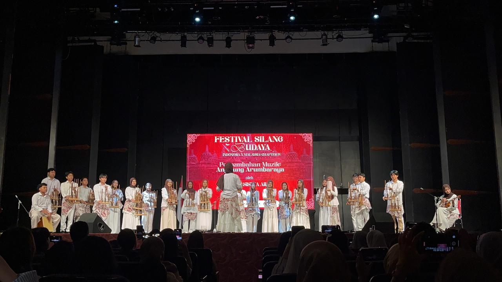
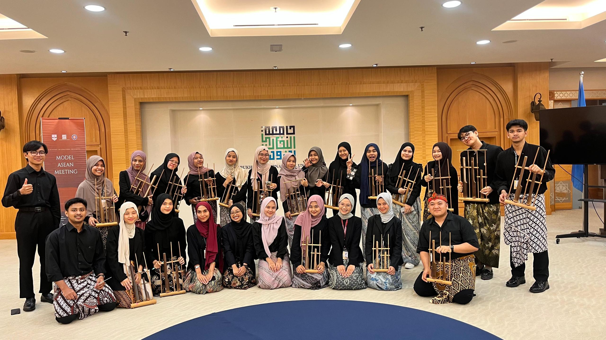
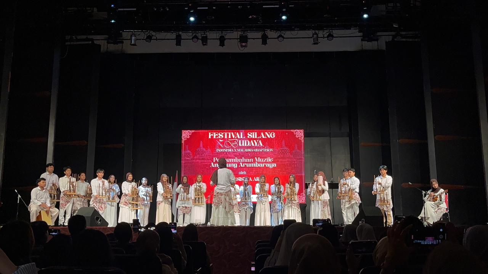
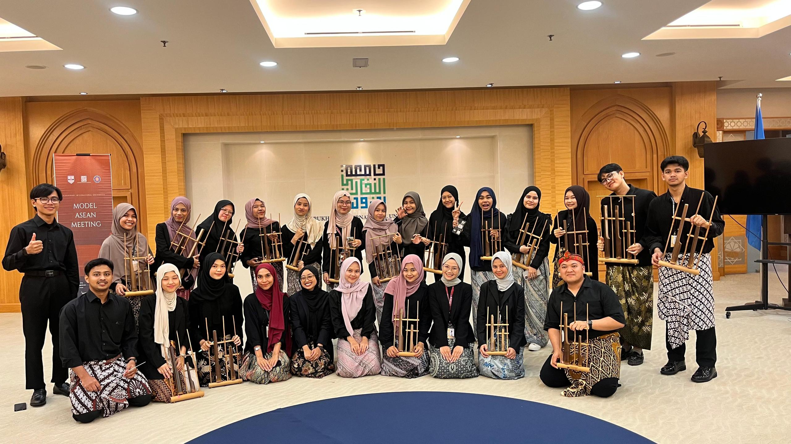

Angklung Arumbaraya adalah komunitas yang diinisiasi oleh mahasiswa Indonesia yang sedang menempuh pendidikan di Universitas Internasional Albukhary, Malaysia. Didirikan pada 1 Desember 2024, komunitas ini bertujuan untuk memperkenalkan, mengembangkan, dan membawa budaya Indonesia ke kancah internasional melalui alunan suara rumpun bambu (Alunan Rumpun Bambu).
Untuk berbagi kegembiraan dan kekayaan budaya musik Angklung melalui pertunjukan menawan yang memadukan tradisi dengan seni kontemporer. Diakui sebagai kelompok pertunjukan budaya terkemuka yang menjembatani generasi dan komunitas melalui bahasa musik universal.
 





Instagram: @angklung_arumbaraya
Email: angklung.arumbaraya@gmail.com